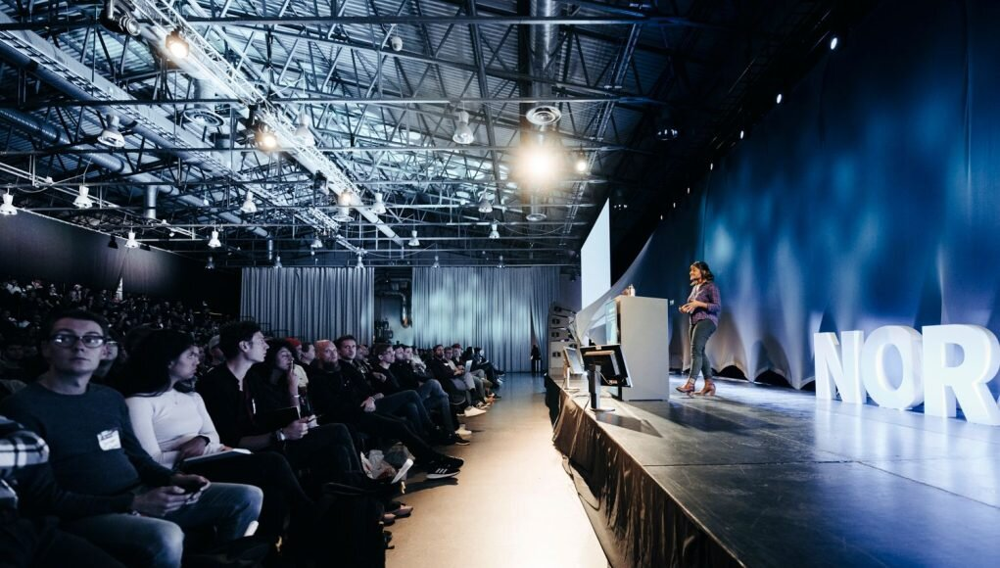

History
TechCon started in 2010 as a small gathering of tech enthusiasts. Over the years, it has grown into one of the most prominent tech conferences worldwide.
Mission
TechCon aims to foster innovation by bringing together the brightest minds in technology. Our goal is to inspire, educate, and create opportunities for the tech community.

Past Speakers
Dr. Ada Lovelace
A visionary in computing, Dr. Lovelace contributed groundbreaking work that laid the foundation for modern algorithms.

Grace Hopper
Grace Hopper revolutionized programming by developing one of the first compilers. Her work paved the way for modern software development.
